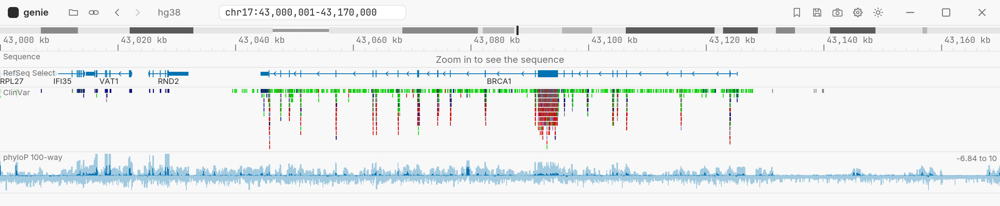
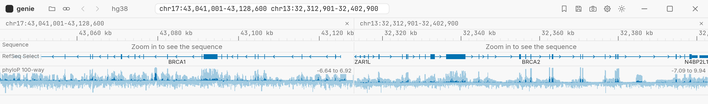

genie
A genome browser for Windows, macOS and Linux.
genie shows sequences, genes, reads, variants and signal. It opens files on your computer and files on the web, and it reads only the parts of a file that the view needs. genie uses Rust and the iced GUI library.

BRCA1 on hg38, with RefSeq Select genes, ClinVar variants and phyloP 100-way conservation.
Features
Genomes
Ten genomes from the UCSC Genome Browser: human (hg38, hg19, T2T), mouse (mm39, mm10), rat, zebrafish, fly, worm and yeast. Each genome opens with its gene track and its chromosome bands. The tracks button adds public UCSC tracks, for example GENCODE, ClinVar, dbSNP, phyloP and ENCODE cCREs. Click Use offline to keep a genome on your computer.
Files
Sequences: FASTA and 2bit. Features: BED, GFF3, GTF and bigBed. Reads: BAM. Variants: VCF. Signal: bigWig and bedGraph. genie also opens files from web servers. It reads only the parts that the view needs.
Tracks
Put the pointer on a feature, a read or a variant to see its data and the fields of its file, for example the ClinVar significance or the VCF INFO entries. Click a field to filter the track by it or to label the features with it. genie colors unusual read pairs, sorts and groups reads, and shows reading frames. Two or more signal tracks can share one lane.
Navigation
Drag to move. Zoom with the wheel, with the keys or with a drag on the ruler. Type a locus, a gene name or a variant ID to go to it. Go back and forward through your jumps.
Regions and sessions
Keep regions in a list, and import or export them as BED files. Save the genome, the tracks, the view and the regions as a session. genie keeps your last session.
Images
Save the view as a PNG or an SVG image. The SVG keeps text as text, so you can edit it in Inkscape or Illustrator.
Several loci
Type two to four loci in the locus box, with a space between them. genie shows them side by side. Each panel moves and zooms on its own. Click the locus above a panel to show only that locus.

BRCA1 and BRCA2 side by side.
Automation
Make one image for each region in a BED file, without a window:
cargo run -p genie -- snapshot work.genie regions.bed picturesWhile genie runs, programs on the same computer, for example R, Python or Jupyter, can control it through port 60151. genie takes the batch commands of IGV, for example goto, load and snapshot. It answers each command when the work is complete.
import socket
with socket.create_connection(("127.0.0.1", 60151)) as connection:
answers = connection.makefile("r")
for line in ["goto BRCA1", "snapshotDirectory /tmp", "snapshot brca1.png"]:
connection.sendall((line + "\n").encode())
print(answers.readline().strip())Run genie
- Install rustup. rustup installs the Rust toolchain that genie needs.
- Get the source and start genie:
git clone https://github.com/collide2954/genie
cd genie
cargo run -p genieEach push to main makes test builds for Windows, macOS and Linux. The builds are in the artifacts of the CI runs for 30 days.
The README has the full guide: genomes, file formats, navigation, tracks, sessions, images and commands.